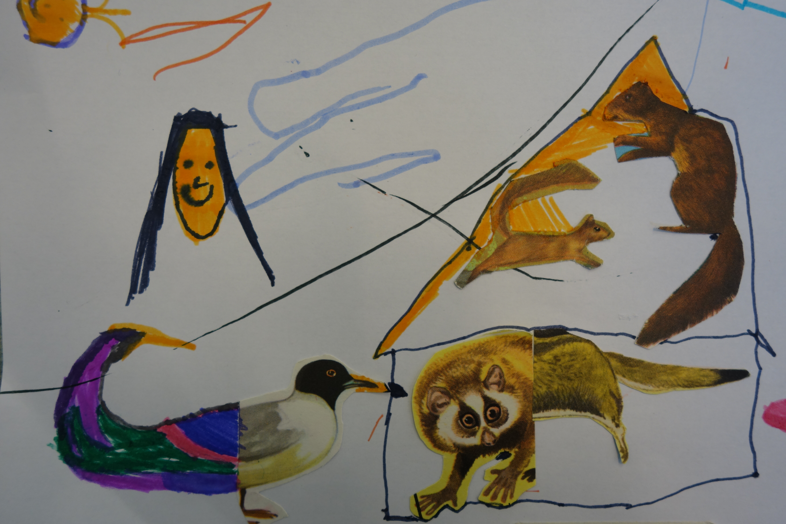
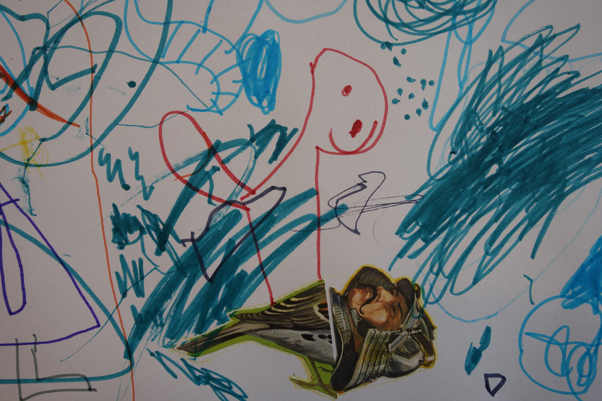
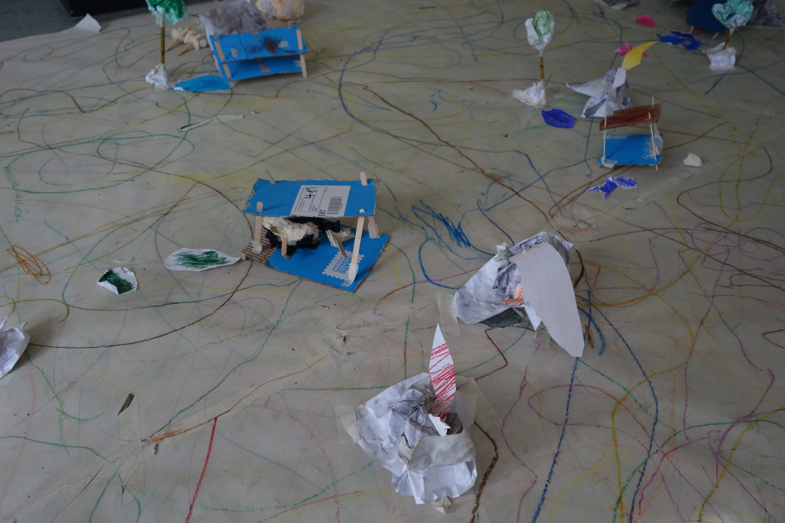
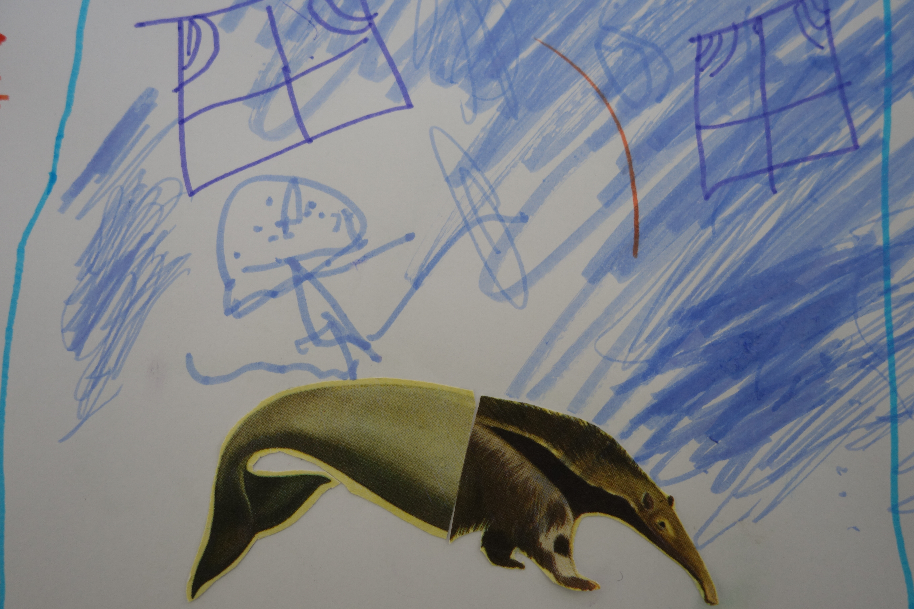
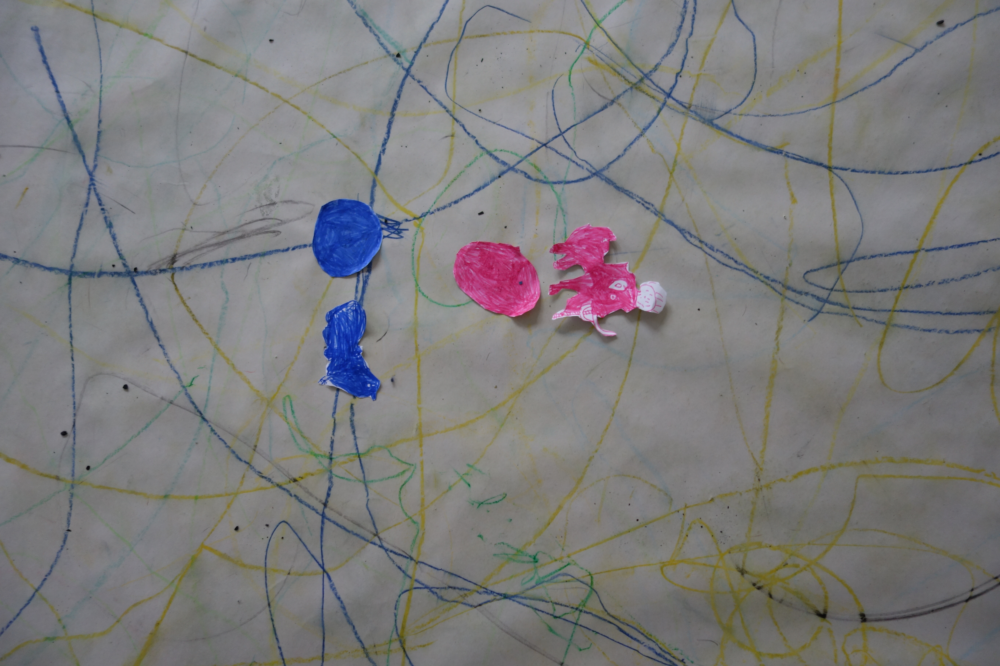

DRAWING / COLLAGE / PUPPETS / STORYTELLING
Drôles
de bêtes
THE FANZINE
A small archive of
imaginary animals
The final fanzine brings together the creatures, drawings and stories invented during the workshop.
DRÔLES DE BÊTES — COLLECTIVE FANZINE, 2022
Drôles de bêtes is a workshop developed at the Centre Culturel de Jette in Brussels in 2022 with children aged 3 to 6.
Through drawing, collage and construction, the children invented strange creatures with unexpected bodies, improbable colours, peculiar names and their own stories.
These imaginary creatures gradually became characters, giving shape to a playful collective world.

INVENTING CREATURES
The workshop began by imagining animals that did not yet exist.
Fragments of paper, colours, drawings and shapes were combined freely, allowing new creatures to emerge through accidents, associations and play.




FROM CREATURES TO STORIES
Once the creatures existed, they acquired personalities, names and stories.
Drawing and collage became starting points for collective storytelling, and the resulting images and stories were gathered into the final fanzine.
CONTEXT
PLACE
Centre Culturel de Jette
Brussels, Belgium
YEAR
2022
PARTICIPANTS
Children aged 3–6
FORMAT
Workshop / Collective fanzine
WORKSHOP DESIGN & FACILITATION
Ilaria Fantini
Drawing, collage, construction, puppet-making and collective storytelling.